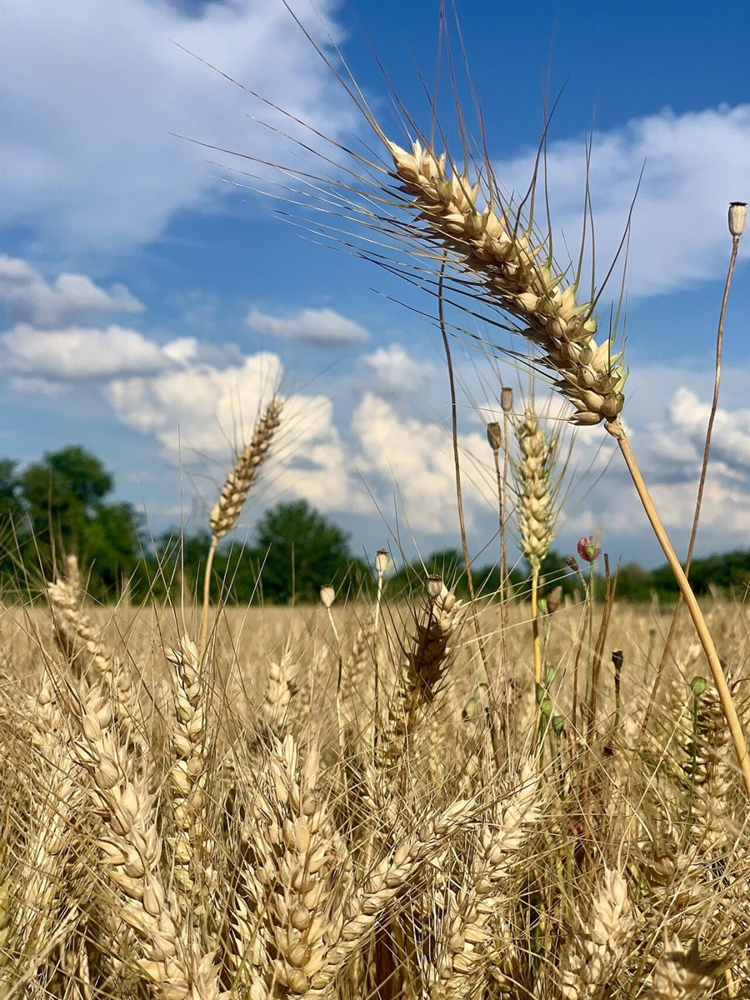

広島県三次市 / パン屋 / 字形見本帖
g bake
広島県三次市畠敷町にあるパン屋「g bake」のご案内ページです。営業時間やメニューは準備中。わかっているのは所在地とInstagramだけなので、いまはまず、小文字の「g」の形を眺めるようなページにしてみました。
制作側の遊び
屋号の「g」を、字形の見本帖にしてみた
屋号「g bake」の「g」の意味は分かりません。制作側は、パンの材料の重さを量る「グラム(g)」や、小文字の「g」の形を連想して、このサイトを作りました。「g」には耳(ear)、ボウル(bowl)、つなぎ(link)、輪(loop)という部分の呼び名があるそうで、パンの耳や、ボウル、輪っかのような形とつなげて遊んでいます。これは制作側の連想で、お店の理念・由来とは無関係です。
gの各部名称 × パンの形(イメージ)
四つの部分を、四つの写真で。
写真は国外または撮影地不明のフリー素材で、お店のパンではありません。
- g-1
ear 耳

穂(イメージ・イタリア) 字の右上にちょこんと出る部分。ここでは、まっすぐ伸びる麦の穂に見立てました。
- g-2
bowl ボウル

まるいかたまり(イメージ・撮影地不明) 字の丸い本体。ここでは、まるいかたまりのパンに見立てました。
- g-3
link つなぎ

すっと伸びた形(イメージ・オーストラリア) 上下の輪をつなぐ細い部分。ここでは、すっと伸びる長い形に見立てました。
- g-4
loop 輪

くるりと曲がった形(イメージ・撮影地不明) 下にぶら下がる輪。ここでは、くるりと曲がった形に見立てました。